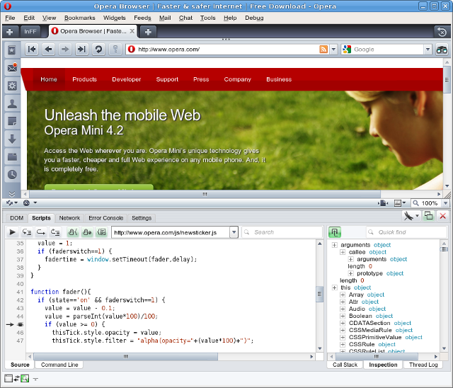

Mobile widget development process advice
24th April 2012: Please note
Starting with Opera 12, Opera Widgets will be turned off for new users and completely removed in a later release. If you're interested in building addons for Opera, we recommend going with our extensions platform — check out our extensions documentation to get started.
Table of contents:
- Introduction
- Define a widget idea
- Develop on desktop
- Testing your widget
- Deploy your widget
- Tools
- Resources
Introduction
This articles provides some advice on developing mobile widgets, with special focus on mobile widgets. We can split the process into four main parts:
- Defining a widget idea
- Development
- Testing
- Deployment
Generally, we recommend that you develop your widget on desktop, test your widget in the Widget Emulator, and test on the phone when you’re done. Finally, you should upload your widget to widgets.opera.com to share it with the world.
Define a widget idea
You should start out by determining what sort of widget you want to make. We recommend analysing user needs and considering the characteristics of the mobile device before embarking on making a widget.
Who are the users? Young or old? Professionals or casual users? What is the need the widget satisfies or the problem it will solve? Which situations will the widget be used in? In the user’s office, living room or while on the move? These are all questions you should have answered before embarking on development.
Develop on desktop
Developing on desktop is quick, easy and supported by several tools, so it’s a lot easier to do the bulk of your development work there, before then testing on mobile devices.
Tip: Spatial navigation on desktop
You can simulate Spatial navigation on desktop by clicking Shift + <arrow key>. Opera will highlight the active link and move the focus when you click the arrow keys.
Spatial navigation is an Opera technology allowing the joystick on your mobile phone to be used to move focus between navigable elements on a webpage. Form controls and links and elements with onclick handlers are added to the spatial navigation connection. Moving the joystick right or down will move to the next navigable element on the page. Moving it up or left will move to the previous one.
By testing Spatial navigation on desktop, you can get an idea of how your widget works on different devices which support it.
Testing your widget
Test in the emulator
The Opera Widgets Mobile Emulator is a useful desktop application for testing what your widget will look like on different devices. Instead of copying your widget onto your mobile phone each time you make a change, you can work on your desktop using your favorite editing tools and run the widget inside the emulator.

Figure 1: The Opera Widgets Mobile Emulator
The beauty of the emulator is not only that it runs on your desktop, but it's also a native application that fully reflects the features and capabilities of our Opera Widgets manager for mobile phones. See the article on the Opera Widgets Mobile Emulator for more details and a download link.
Test on the phone
When you are satisfied with the result, you can copy the widget onto the device and make final tests.
In order to test your widget on a an actual device, you have some choices:
- Copy the packaged widget onto the device, for example through USB or Bluetooh connection, and run it from the file system. How this is done varies from mobile to mobile.
- Make the widget downloadable from the web. Opera will recognize any .zip or .wgt file served with the
application/x-opera-widgetsMIME type. Visit the URL with your mobile phone to load the widget.
Debug using Opera Dragonfly
In order to speed up debugging, you can use Opera’s inspector and debugger Opera Dragonfly. You can debug scripts running in widgets on Desktop as explained in the article on debugging widgets with the Widget Emulator and Dragonfly.

Figure 2: Opera Dragonfly.
You can also debug widgets running on the mobile phone, by connecting it to a debugger running on Desktop.
You should use Opera Dragonfly rather than use more cumbersome methods such as calls to alert() and opera.postError(). Note that these functions usually do not work on mobiles anyway.
Deploy your widget
You have two choices when finally deploying your widget:
- Upload your widget to widgets.opera.com. This website is the hub of all community widget activity. Each widget is reviewed by Opera Software to check if it works on different devices.
- Make the widget available on your own website. Opera will recognize any .zip or .wgt served with the application/x-opera-widgets MIME type. The link element can be used to announce a widget from a web page using rel=“alternate” and type=“application/x-opera-widgets”.
widgets.opera.com will filter the list of available widgets based on the client viewing the pages. If you visit the site with a mobile phone, you will only be able to access those widgets that have been approved for use on that type of device.
See Packing and deploying your Opera Widget at dev.opera.com for more information.
Tools
Editing environments
Several editors have good support for web related languages such as HTML, JavaScript and CSS. Some suggestions:
- Aptana – Eclipse-based IDE, featuring built in support for various toolkits.
- OpenKomodo – Limitless scriptability.
- UltraEdit – for a slimmer experience
- Emacs – for the diehard Unix user.
Tip: Import dummy JavaScript files for auto completion
Some editors, like Komodo, support importing JavaScript files and using their contents for auto completion. There is a dummy file for the Opera Widgets core DOM reference available that you can use to get auto completion of the widget and window objects when editing your JavaScript.
Resources
Widget EmulatorThis article is licensed under a Creative Commons Attribution, Non Commercial - Share Alike 2.5 license.
Comments
The forum archive of this article is still available on My Opera.
No new comments accepted.